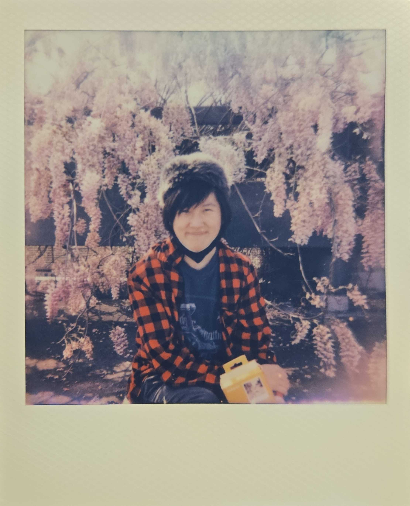

CompSci student @ Portland State University
I'm a passionate computer science student currently attending at Portland State University for my bachelor's.
Growing up, I've always been interested in and surrounded by technology, especially when music and vocal synths are involved. I've been fascinated with vocal synths for as long as I could remember, and it continues to be one of my special interests today!
Outside of school and work, I like to work on my personal projects. My main personal project right now is creating a RVC AI voice model and keeping up to date with the latest vsynth technology.

I be working. That's crazy
I be working. That's crazy
I be working. That's crazy
I really like Miku...
I really like Miku...